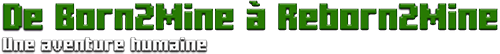
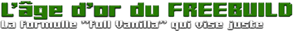
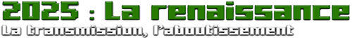

L'histoire de notre communauté commence fin 2012.
À l’origine, le serveur était un espace public fondé par Spirocraft et Tiboti_Dalton et était ouvert à tous.
Très vite, pour préserver la qualité de l’expérience et pallier les problèmes de griefs, nous avons fait le choix de la rigueur :
- passage aux versions officielles
- mise en place d'un système de candidatures.
C’est ainsi qu’est né Born2Mine.

Grâce à une restructuration complète du Spawn, la création de mondes dédiés et l'ajout de plugins de protection (tout en préservant un gameplay 100% Vanilla), le serveur a pris son envol.
Portés par une vision commune du multijoueur, des joueurs passionnés nous ont rejoints : Broxlan, LeRoiDuCoussin, Palpatine21, MinouToutDoux, Gostique, Vinouxxx et tant d'autres.
Ensemble, nous avons hissé le serveur à la 7ème place des serveurs Freebuild français.
Suite à la fermeture imprévue de la base de données initiale, un tournant s’est opéré.
Plutôt que de reconstruire un grand serveur public, nous avons choisi de privilégier l’amitié et la qualité du jeu.
Nous avons migré vers un modèle privé sous Whitelist, sur une carte totalement vierge, en suivant au plus près les dernières nouveautés de Minecraft (Snapshots).

Depuis 2016, notre vocation n’a pas changé : exploiter au maximum les mécaniques de base du jeu, sans mods ni artifices.
En 2025, le projet évolue et renait: Reborn2Mine!
Aujourd'hui, sous l'impulsion de Minou et Tiboti_Dalton, nous mettons notre expérience et notre maturité au service d'un monde cohérent.
Notre approche est unique:
- Zéro pression : Nous privilégions les projets qualitatifs qui s'inscrivent dans la durée.
- Expertise variée : Entre Redstoneurs fous, constructeurs hors pairs et maîtres du Terraforming, nous explorons chaque facette du jeu.
- Esprit "Old School" : Nous recherchons l'émerveillement et la cohérence d'une civilisation que l'on bâtit pas à pas, comme l'avait imaginé Notch.
Nous recherchons désormais quelques nouveaux compagnons de route.
Si vous partagez notre passion pour le Vanilla pur et que vous avez la même vision "adulte" et passionnée du jeu, vous êtes peut-être le prochain habitant de Reborn2Mine.